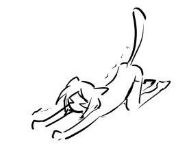
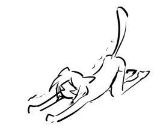

梗概：
本在某天加班回家的路上救下了一只被丢到江里的奶牛猫，然后小猫有天大变活人了。
人物
本
男性，196，黑皮白毛绿眼，【眼睫毛眉毛也都是白色】骨架宽大，但肌肉并不是很发达的程度，整体偏修长，精力很好，平时都是笑眯眯的。
普通上班工薪族，在某公司的财务部门上班，一直很想养猫，有一天小区里来了一只流浪长毛小奶牛猫，被本带回家养，取名叫小江，从此变成猫奴。
非常喜欢没事贱一下家里的猫，然后被小江（猫）梆梆扇巴掌。
后来变成人形的小江越来越像人，懒懒散散的就不太好贱了（但是很好草）。
手机里20000张照片有18000张都是猫的照片，还有一个隐私相册都是见不得人的色情小视频：全是小江变成人后的。
- 一开始主要还是小江刚变成人不喜欢穿衣服，光着屁股家里到处跑。本：先拍几张，然后开始抓人穿衣服。）
- 后来小江越来越像人，就慢慢变成了小江的性爱小视频。
本：我拍我自己的猫有什么错.jpg
关于草猫这件事：一开始真觉得自己是个变态，后来就接受了自己是变态的事实。
小江
猫
蓝眼睛长毛奶牛【小母猫】，布偶猫和奶牛猫的混血，小小一只，非常软，聪明毛很长。
- 好奇宝宝，但胆小，怕生，怕人。
平时比较安静，沉默寡言，动静很轻很小，但需要本的时候会叫，在本面前叫声很嗲很甜，本不在的时候（比如说被关在了卧室门外后）叫声尖利（还挠门），不需要的时候就趴床上趴着，本喊名字的时候晃晃尾巴表示听到了。
虽然是个小残疾，但是受惊往床底钻的时候四个爪子划拉得飞快。
- 有一个很喜欢的小枕头玩具，是本用自己被小江抓烂了的衣服缝起来的，小江很喜欢，喜欢叼着带着到处走或者是踩在脚底下。
人
变成人外表看起来是“只有女性生殖器的”男性，176，中分半长黑发，宝蓝色眼睛，头发偏长到肩膀下一点，平时散下，到后期越来越像人的时候会扎起来
老师写文的时候请以男性的躯体来描写，类似于是看起来是男性的，但是下体只有女性生殖器的偏中性的男性这种感觉。
- 对不起有些人的XP就是很奇怪。
不喜欢穿衣服，就算穿衣服也只愿意穿本穿过的，带着本味道的衣服，爱睡，每天都喜欢趴着等本回家，安静，动静很小。
 
故事背景
本一直很想养猫，但是因为各种原因没有找到对上眼缘的，直到有一天本居住的小区里来了一只漂亮但警惕的长毛奶牛小流浪猫，本一眼就盯上了。
最开始的时候（家里虽然没猫但是有猫粮的），本天天定点专项投喂，但因为小奶牛很警惕，只要有人靠近绝对扭头就跑，再加上工作忙碌，一直没有找到机会下手。直到后来有一天小奶牛从小区里消失了，定点投喂的地方再也没有出现过，本找了几天都没找到，猜测是不是被别人抓走领养了，本觉得挺遗憾的，心里也好奇小流浪这么怕人是怎么被抓走的。
直到又过了几天，有一天本晚上下班回家路上路过江滩，看到有人趁着夜色拎着一个布袋子，袋子里有活物在挣扎，似乎隐约还有猫凄厉惨叫，那个人拿着棍子还想对着袋子打几下，本看着那人动作立马大叫阻止，那人听到有人在，决定直接把袋子扔江里就跑。
那个袋子在江边随着江浪起起伏伏，里面还有东西在动，本和那人有蛮远距离一时不可能追上，就直接去江里捞布袋子，打开袋子就看见湿漉漉的，三个腿都软塌塌垂在那的发抖奶牛小猫，还有一个爪子在那里抓，小奶牛看到袋子被打开第一反应就是想跑，对本撕心裂肺的叫、恐吓哈气，本一下子就看出来袋子里的是自己之前一直心心念念的流浪小奶牛。
本又心疼又愤怒，连夜带着小奶牛去了最近的还开着的宠物医院。
猫被送医院救了两三天，花费巨大，猫还怕人，一看到人就哈和挣扎，上药都很困难，反而导致受伤的更严重了。医生就说要救这猫起码得花好几万，身上各处都有伤口，救助过程中很容易因为其他原因感染或者没撑住死掉。而且看起来这猫被虐猫的人弄的怕人了，本身社会化训练完全不行，养了估计也养不熟，让本思考到底要不要救。
本毫不犹豫的说要，并且立马给它起名叫小江。
起名的目的是对医生，也是告诉自己：之后不管这猫活的概率多低也要对它负责到底，因为自己已经给它起了名字，它不是没人照顾的猫了。
结果后续小江真的慢慢好起来了，即使依旧很怕人会挣扎但是伤口没有恶化了，也没有得什么猫传腹啥的，在医院呆了一个月多其他三爪子和各种伤口已经差不多好转不影响后续行动就出院，然后被本带回家开始了漫长的培养感情过程。
- 小江的三只被折断的爪子长好了，但是有一只爪子神经性损伤定型了，残疾了，走起路来用不了力，姿势也有些奇怪。
本生活居家一本好手，虽然上班偶尔忙碌（尤其年末），但一般来说是自己做饭，有了小江之后包括猫饭也都是自己做，只是小江因为被虐待过，再加上本身胆小怕人，被接回来后直接就往床底下或者各种角落钻（厕所/窗帘，桌角，衣柜上之类的），怎么样都不肯出来，本一靠近就哈气呜呜叫。
本没有办法，只能每次把水和猫饭和猫砂盆放到角落里，然后自己尽量不在猫头前出现。
过上了很长一段时间的虽然家里有只猫，但是只能见到猫毛和猫饭减少，见不到猫的生活，因为小江只缩在床底。
但是小江还是要去医院定期复查，包括喂药之类的活动，每到这种时候对本来说都很灾难，一个是小江总是钻到各种奇奇怪怪的角落里，难抓，还有一个是害怕硬来的话小江应激，就算是费九牛二虎之力抓到猫之后，小江还是会疯狂挣扎，本的手臂上全是大大小小的抓痕。
- 虽然因为有伤的原因，这个挣扎很容易压制。
后来小江慢慢地愿意出现在本的面前，走出角落里，愿意在本地注视下吃饭或者是在各个地方闻闻嗅嗅，只是还是不肯和本亲近，本一靠近还是会钻回去。但是本还是很喜欢小江，手机里都是小江（各个角度对着本在床底张着嘴巴哈气）的照片，上班的时候还会展示给同事看手机里的照片，和自己手臂上的伤痕
- 同事：……
这样的状态大概持续了一年多，小江终于重新信任了这个人类，会愿意被本摸摸抱抱，也会拿头顶顶蹭蹭本的腿，虽然还是很不愿意洗澡喂药剪指甲，但是对本的态度已经好了很多。
只是这样的态度仅仅是对本，本的同事来本家看猫的时候小江从来不会从床底出来，本也不会强迫小江的意愿（本：那你只能看看照片了）。
就这样一人一猫相处了大概快两年，中间还有很多次发情，到处乱跑乱叫，本本来打算等小江状态再好一点就带它去绝育，结果没想到在一天夜里，一个浑身赤裸的有着猫耳猫尾巴的男性趴在了他的身上，本发现他居然看起来是男性但是有女性的器官，而且一直是湿湿的（因为发情期），嘴里呜呜咽咽的。
本立马认定是春梦，满足的想过了多年终于重新体验了次大学时期常有的快乐【春梦】也没有细想这个人是谁，看起来还蛮像自己的理想型的，既然是春梦，总之就拉着对方狠狠的doi了。虽然对方好像并不会说话，而且对这种感觉似乎很陌生，但他好像也挺享受的，在doi的过程中发出很好听的声音，还抱着本不撒手，于是本快乐内射了。
本第二天醒来后，首先是发出对春梦满足的喟叹，然后才发现身边似乎有个很大的东西。抬头一看发现这个顶着猫耳和猫尾巴的人还在，着实吓了一跳，而且这个男性就光着身子趴在自己身边，蓝色的猫眼一直盯着自己，见到自己醒来后还想要舔自己。
本在看到他身上猫的特征，又打量了下凌乱的床，脑袋里开始有了某种大胆又可怕的猜测，但他还是先怀着惊惧的情绪逛了一圈屋子，一边喊小江一边寻找自己的猫。直到到处找不到自己的猫，同时发现每次自己喊小江，床上的那个直勾勾盯着自己的人尾巴和耳朵就会动一下作为回应，这个行为和小江一模一样。他才开始感觉那种恐怖猜测的可信度越发的高。
不是吧？？？
本表情里只有了惊恐。
难不成是自家猫变人了？不会吧？太迷幻了吧？
而且我是不是干了什么毫无人性的事情？？？就？如果他？她？真的是我家猫的话？我是不是……啊？？？
本站在床边呆愣，小江安静地躺在床上，和本对视。然后过了会就伸展了一下纤细的腰身，不发声的伸手抓着本的衣服，开始往本身上蹭，尾巴翘得高高，撅着屁股对着本，眼里露出渴望的神情。于是本一边不敢置信自己的龌龊行径，一边看着这样的又猫又人的家伙，又硬了……
哎呦说不准我还没醒。本这么自我安慰着：这种什么猫变人的情况怎么想都太迷幻了吧哈哈哈嗨呦这春梦还怪真实的呢，既然如此不如趁着还没醒再来一发吧！于是放弃思考的本又快乐的和对方doi了一回。
然后他发现这个梦似乎太长了。
在他doi完看着埋在被子里蜷成一团的人型鼓起，慢慢的变小最后变成了一小团猫钻了出来，本真正的傻了半天，才彻底的意识到自己家猫大变活人了。还是在自我抽了好几巴掌脸疼的不行的前提下……不然这真的太不真实了……
原来，我真的是个禽兽不如的人……我，我真的日猫了…………
还日了两回…………………………
（这个时候的小江虽然变成了人，但是还是猫的思维，很多行为都是按照猫的习惯来的，也不会说话，只会发出呜呜的声音，很喜欢舔舔拱拱蹭蹭和咬人）
- 知道小江能变人后本就再也没有把同事往家里带过，本：没空没空
之后的生活对本来说简直就是灾难也不为过，因为小江总是没有规律的不可控地变成人，而且惯用的还是猫的思维，有时候本一开门回家就会看到一个光着身子的小江趴在桌子上等着自己，总之要教的第一件事太多了其中就包括使用人类的厕所（？），不能光着身子在地上爬（……），不能半夜蹦床往主人身上跳（……）额之类的。
然后因为发情期的原因，再加上小江之前尝到了甜头，小江经常半夜爬床舔本，导致后面本半推半就地逐渐接受了自己是个草猫（可能还是草弱智）的变态的事实，两人做的次数也不少，本还会哄着小江叫自己的名字（这个时候可能还不会，依旧只是会呜呜那种小猫一样的声音），然后做完，小江还会在床上打滚（母猫为了增加公猫精子着床概率），本看到这个行为的时候心里稍微有点忐忑的，还想应该不会怀孕吧。
两人做完大概三四个月后，期间本有一直教小江说话，和一些人类行为，小江也是断断续续地变猫变人，有一天小猫对着本叫出了本的名字，那是小江第一次吐词清晰的说话，本高兴坏了，抱着小江让小江继续叫，然后小江就一遍依旧像猫一样的舔着本,一边含混叫着本的名字，而且越来越清晰越来越顺利，然后把本舔的性质起来了两人又do了一发。
虽然已经学会了一些人类的行为，但是有些作为猫的习惯还是很难改，比如说不爱洗澡不喜欢穿衣服之类的，本给小江买过新衣服，但是因为新衣服的气味很陌生，小江会趁着本不注意自己脱掉，毕竟本身也不喜欢穿衣服，就算穿也只愿意穿本的衣服，因为上面有本的气味
但是从这以后小江就不再变成人了，一直保持着猫的形态，而且非常粘本，恨不得只要本在家就和本黏在一起，而且小江的肚子也在变大，本心里有了不好的想法然后带着小江去了宠物医院做检查，然后得知卧槽居然怀孕了。
本：……怀的是什么？
医生：啊？
本：怀的是什么？是猫还是……？
医生：……？
总之得知小江怀的确实是猫之后有很奇怪地松了一口气（不管逻辑了，总之就是这样）
带回家后本就开始着手准备产房，本根本不知道这次怀孕到底是什么状态，甚至拿不准小江会不会突然又变人，也不知道对小江会不会有什么伤害，总之就是精神蛮紧张地。某天本半夜一听到动静就起床了如临大敌，发现小江趴在产房里打算生育了，好水好饭地伺候着，但是小江因为之前一直流浪的经历，所以其实已经是一个生育老手（是的），很顺利地以猫的形态在某一天夜里生下来两个小猫,一只重点色，一只奶牛。
重点色小猫叫"墨墨"，奶牛色小猫叫"黑黑"）。
生下来小猫的几天后小江就又开始变人了，本首先确认小江身体有没有异常，然后发现除了胸口有泌乳产奶以后（胸口会变得有点涨涨的，但总体还是平平的），其他都还算正常，于是自认变态的本毫无心里负担地在doi的时候也会去嘬小江分泌的乳汁，只不过会带套，不会内射了。
后面小江慢慢的变猫的次数越来越少，直到完全变成人类不会再变回猫的时候，那个时候就确实不会再怀孕了。
（可能本还干过那种在小江"猫形"喂奶的时候把小小猫扒拉开自己上去好奇地嘬一下的畜事。。。小江：疑惑震惊但是躺平任嘬）
后面小江开始能够真正听的懂本说的话，本也发现了小江好像慢慢地可以自己控制变人这件事了，其中就包括本抓人穿衣服的时候小江就会变成猫钻床底下或者其他本够不到的地方，然后本把猫逮出来的时候抱着（本：给我变.jpg）小江也只是晃晃耳朵当作听不懂。
虽然小江慢慢听得懂本说的话了，只不过偶尔会当作听不懂，
其他想约的时候再补充！！